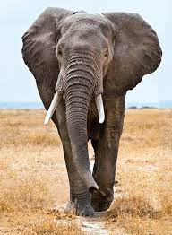
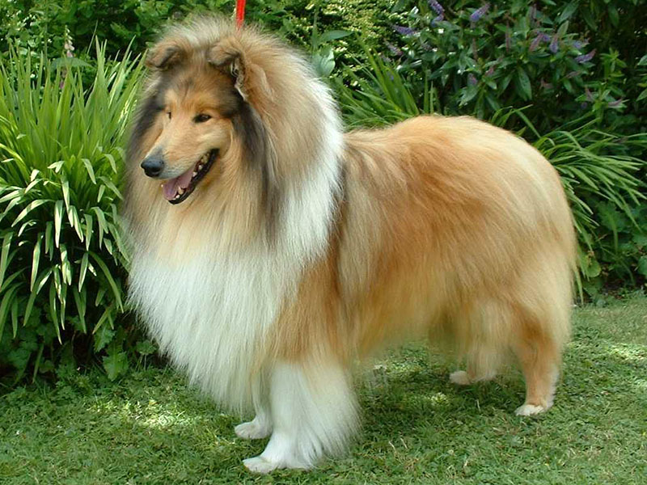
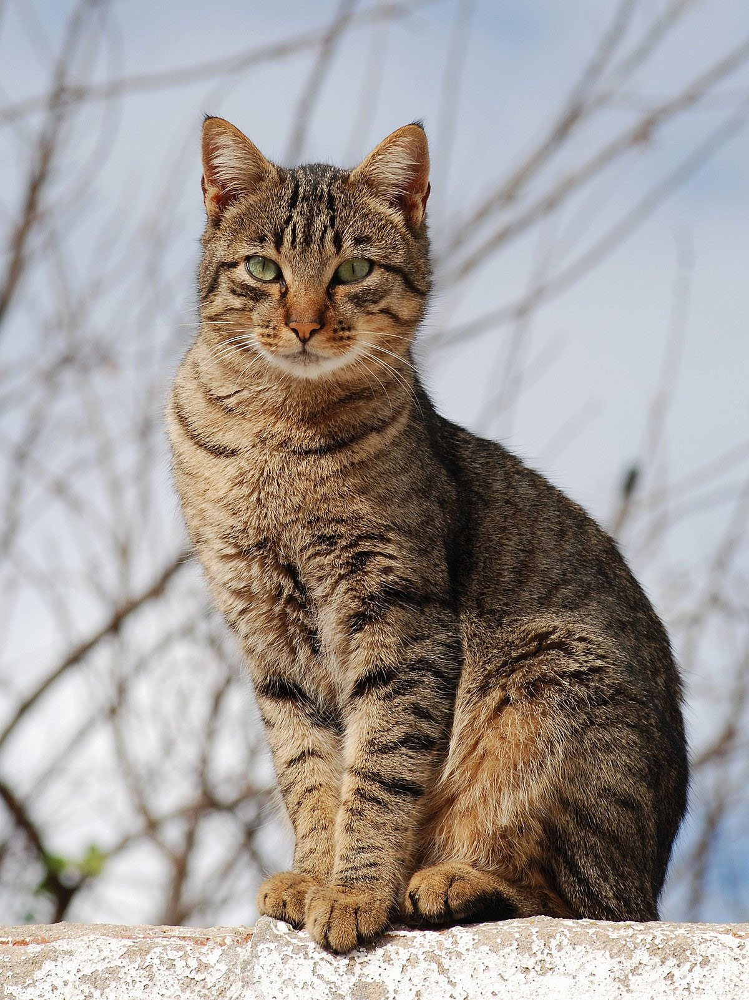

The horse (Equus ferus caballus) is a domesticated one-toed hoofed mammal. It belongs to the taxonomic family Equidae and is one of two extant subspecies of Equus ferus. The horse has evolved over the past 45 to 55 million years from a small multi-toed creature, Eohippus, into the large, single-toed animal of today. Humans began domesticating horses around 4000 BC, and their domestication is believed to have been widespread by 3000 BC. Horses in the subspecies caballus are domesticated, although some domesticated populations live in the wild as feral horses. These feral populations are not true wild horses, as this term is used to describe horses that have never been domesticated. There is an extensive, specialized vocabulary used to describe equine-related concepts, covering everything from anatomy to life stages, size, colors, markings, breeds, locomotion, and behavior.
  